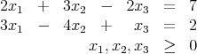
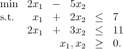
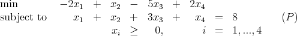

This homework will not be collected or graded. You need to do these questions in order to master
the material and be ready for the third exam.
The third exam will be in class on Friday, December 10. Old exams will be placed online for
review. The exam will contain one question from Homework 6 (Chapter 8) or Homework 7 (interior
point methods) or Homework 8 (Chapter 10). Solutions to Chapters 8 and 10 from the text will be
made available on the course webpage.
- Determine whether each of the following is an interior point solution to the following
standard form LP constraints:

- x = (2, 1, 0).
- x = (7, 9, 17).
- x = (1, 3, 2).
- Consider the linear programming problem

(Note: Keep the constraints as inequalities throughout this problem, so don’t introduce slack
variables. An interior point must satisfy all the constraints strictly.)
- Solve the problem graphically.
- Determine the direction Δx of most rapid improvement in the objective function.
Is this direction feasible at any interior point solution to the model?
- Show that x = (2, 1) is an interior point solution.
- Determine the maximum step α in the direction Δx from the point x0 that
preserves feasibility. Let x1 = x0 + αΔx.
- Plot the move of part 2d and the resulting point x1 in the graph of part 2a.
- Explain why it is easier to find a good move direction at x0 than at x1.
- Consider the problem

We are going to examine applying the affine scaling algorithm to this problem, using different
initial points xk. Notice that the problem has only one constraint, so the projection matrix
will be a 1 × 1 matrix, ie, just a (positive) number.
- Let xk = [3, 1, 1, 1]T .
- Find an equivalent rescaled problem to (P) where the vector of all ones is
feasible.
- Find a dual estimate vk.
- Find a direction in the rescaled problem.
- Find a steplength in the rescaled problem.
- Update the iterate xk.
- Now let xk = [0, 8, 0, 0]T . Find a new dual estimate vk and direction dk, and verify that
c - AT vk has a negative component, but dk = 0.
- Now let xk = [8, 0, 0, 0]T . Find a new dual estimate vk and direction dk, and verify that
vk is dual feasible and that dk = 0. What do you conclude?
- Now consider again the problem in question 3. In this question, you will calculate a
primal-dual barrier step. Take xk = [3, 1, 1, 1]T again. Let yk = -4. The duality gap is then
24.
- Calculate xisi for i = 1,…, 4, where s is the vector of dual slacks.
- Take μ = 2. Calculate primal and dual directions. Calculate new iterates with
primal and dual step sizes of 0.95 of the way to the boundary.